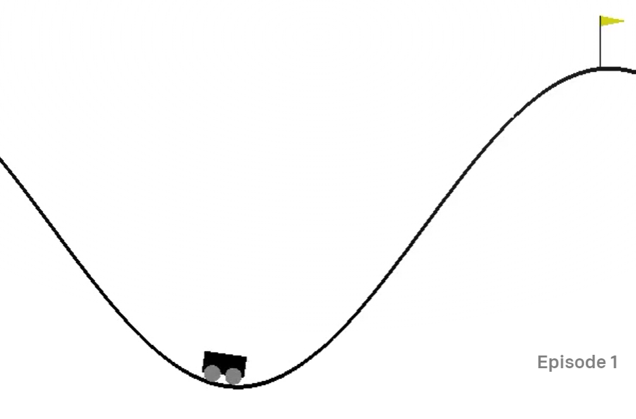
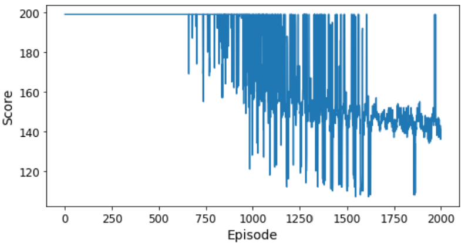

Code
import gym
env = gym.make('MountainCar-v0')
print(env.observation_space)Box([-1.2 -0.07], [0.6 0.07], (2,), float32)John King
April 11, 2020
A while back, I found OpenAI’s Gym environments and immediately wanted to try to solve one. I didn’t really know what I was doing at the time, so I went back to the basics for a better understanding of Q-learning and Deep Q-Networks. Now I think I’m ready to graduate from tic-tac-toe and try a Gym environment again. Best to start simple, though.
There are two Mountain Car environments: one with a discrete number of actions, and one with a continuous range of actions. Keeping it simple means go with the discrete case. The Gym documentation describes the situation and the goal:
A car is on a one-dimensional track, positioned between two “mountains”. The goal is to drive up the mountain on the right; however, the car’s engine is not strong enough to scale the mountain in a single pass. Therefore, the only way to succeed is to drive back and forth to build up momentum.

One of the nice things about working with Gym environments is that I don’t have to put effort into defining my own environment like I did with tic-tac-toe. All I have to do to create the mountain car environment is gym.make('MountainCar-v0'). It’s that easy! I need to get some information about the state space and actions so I know what I’m dealing with. First the state space.
Box([-1.2 -0.07], [0.6 0.07], (2,), float32)Box means that it’s a continuous state space, and the (2,) means there are two numbers that represent the state space. The two lists represent the low and high limits of the state space. Going back to the documentation, the state represents the position and velocity of the car in that order. In other words, the position can be between -1.2 and 0.6, and the velocity can be between -0.07 and 0.07.
The documentation states that an episode ends the car reaches 0.5 position, or if 200 iterations are reached. That means the position value is the x-axis with positive values to the right, and that a positive velocity means the car is moving to the right. The documentation also says that the starting state is a random position from -0.6 to -0.4 with no velocity, so the car starts at the bottom of the valley at a stand still. Makes sense. What do I have for actions?
Three possible actions. 0 means push left, 1 means do nothing (not sure why you’d ever do that), and 2 means push right.
Last thing I need is how the rewards work. They say you get “-1 for each time step until the goal position of 0.5 is reached”. So there’s no positive reward? Huh. They also say “there is no penalty for climbing the left hill, which upon reached acts as a wall”. I guess that means the car can bounce off it without crashing.
To interact with the environment, I first need to reset it with env.reset(). This gives me the car’s starting state. Then I need an action. I can get a random action from the environment with env.action_space.sample(), or I could just use numpy to generate a random number. Anyway, then to execute that action in the environment, I use env.step(action). This returns the next observation based on that action, the reward (always -1), whether the episode is over, and some empty information. Also according to the docs, I should close the environment when I’m done with it. Here I’ll take 5 random actions to see what things look like.
observation: (array([-0.5010359, 0. ], dtype=float32), {})
action: 1
step results: [-5.012050e-01 -1.690923e-04] -1.0 False False
action: 2
step results: [-0.5005419 0.00066308] -1.0 False False
action: 1
step results: [-5.000516e-01 4.902922e-04] -1.0 False False
action: 0
step results: [-0.5007378 -0.00068616] -1.0 False False
action: 1
step results: [-0.50159526 -0.00085749] -1.0 False FalseOk, got it. I’ll import a bunch of stuff and then get to solving this thing with a DQN agent.
If you read my last post on deep Q-networks, a lot of this will look familiar. I’m only going to explain what’s different, so you might want to go back and read it.
build_model: The only thing I changed here was to reduce the number of nodes in the two hidden layers. Since there are only two values that represent the state and only three actions, 32 nodes seemed plenty.
add_memory: This is completely new. What I’m doing here is storing information about every step (an “experience”) to create what’s referred to as a replay memory. In the __init__ function, I create a deque of length 2000 for this purpose. This function simply adds an experience to the replay memory. Since it’s a deque, once it contains 2000 items, adding a new item to the top of the queue will cause the oldest item to be removed.
sample_experiences: This is also new and is part of the replay memory implementation. This function is called only after the replay memory deque is full. Here I randomly sample 64 experiences (defined by batch_size) from the replay memory. According to Aurélien Géron,
This helps reduce the correlations between the experiences in a training batch, which tremendously helps training.
train_model: The only thing different here is the implementation of training from memory replay via self.sample_experiences() instead of training based on the full set of experiences. Otherwise, the neural net is trained exactly the same way as it did for the tic-tac-toe example. Although not strictly part of this function, I also switched from a stochastic gradient decent optimizer to an Adam optimizer and decreased the learning rate to 0.001 in the __init__ function.
class DQNagent:
def __init__(self, state_size, action_size, episodes):
self.gamma = 0.95
self.batch_size = 64
self.state_size = state_size
self.action_size = action_size
self.episodes = episodes
self.replay_memory = deque(maxlen=2000)
self.optimizer = tf.keras.optimizers.Adam(learning_rate=0.001)
self.loss_fn = tf.keras.losses.mean_squared_error
def build_model(self):
model = tf.keras.models.Sequential([
tf.keras.layers.Dense(32, activation="relu", input_shape=[self.state_size]),
tf.keras.layers.Dense(32, activation="relu"),
tf.keras.layers.Dense(self.action_size)
])
return model
def add_memory(self, state, action, reward, next_state, done):
self.replay_memory.append((state, action, reward, next_state, done))
def sample_experiences(self):
indices = np.random.randint(len(self.replay_memory), size=self.batch_size)
batch = [self.replay_memory[index] for index in indices]
states, actions, rewards, next_states, dones = [
np.array([experience[field_index] for experience in batch])
for field_index in range(5)]
return states, actions, rewards, next_states, dones
def train_model(self, model):
states, actions, rewards, next_states, dones = self.sample_experiences()
next_Q_values = model.predict(next_states, verbose=0)
max_next_Q_values = np.max(next_Q_values, axis=1)
target_Q_values = (rewards + (1 - dones) * self.gamma * max_next_Q_values)
target_Q_values = target_Q_values.reshape(-1, 1)
mask = tf.one_hot(actions, self.action_size)
with tf.GradientTape() as tape:
all_Q_values = model(states)
Q_values = tf.reduce_sum(all_Q_values * mask, axis=1, keepdims=True)
loss = tf.reduce_mean(self.loss_fn(target_Q_values, Q_values))
grads = tape.gradient(loss, model.trainable_variables)
self.optimizer.apply_gradients(zip(grads, model.trainable_variables))This problem kicked my butt for quite a while. I could not get that stupid car up the hill! It seemed so simple, but I was stumped. I actually solved this early on with a simple hard-coded policy: if the car is moving left (a negative velocity), push left. Otherwise, push right. Done. Didn’t even need a neural net, q-learning, or anything. So why bother with solving this with reinforcement learning? I guess in the real world I wouldn’t, but the point here is to see if I can train a neural net (NN) to learn that policy.
First, I left everything as is, and just fed experiences to the NN hoping it would learn. Recall that each episode consists of 200 steps, and so you get a -1 reward for each step for a total reward of -200. If the car reaches the goal in say 150 steps, then you get a total reward of -150. My idea here was that the NN would learn to maximize the total reward by finishing in under 200 steps. Nope. Never happened. The car never got to the goal during training and so the NN never learned anything.
Then I started thinking about the reward system. It seemed like I needed to give the NN some positive reward to encourage it along. I tried giving a small positive reward if the car made it some distance away from the range of possible starting points. That ended up teaching the NN to drive up and down the same side of the hill over and over. Clearly, the statement, “the only way to succeed is to drive back and forth to build up momentum” is correct, but how do I do that? I tried a one-time positive reward on one side of the hill and only gave additional rewards if the car then tried going up the other side of the hill. That didn’t work, either. I tried giving a huge reward if the car ever made it to the goal position, hoping that would back-propagate quickly through the NN weights. Still nope.
It seemed like this reward system I was creating was getting a lot more complicated that it should need to be, so then I tried all of the above while at the same time adjusting the tuning parameters: learning rate, discount rate, and epsilon. No luck. I tried fiddling with how the NN was constructed: number of hidden layers, nodes, etc. Nope. I also tried changing the replay memory batch size. I even took memory replay completely out of the algorithm thinking that maybe that rare time the car made it to the goal kept getting missed in the random draw from the memory replay. Nope again.
It dawned on me that maybe I should just come up with a reward system that mimicked the hard-coded policy I described earlier. Finally, that worked! In the code below, you’ll see:
if next_state[0] - state[0] > 0 and action == 2: reward = 1 moving right and pushing right = a rewardif next_state[0] - state[0] < 0 and action == 0: reward = 1 moving left and pushing left = a rewardThe following code trans the NN for 600 episodes and keeps track of the best score. I define the score as the number of steps it takes to reach the goal, so the fewer, the better. When a new best score is reached, I save the model weights as best_weights. After the 600th episode is over, I reset the model weights with the best weights. Why? It turns out that learning is hard, and forgetting is easy, which I’ll demonstrate shortly.
best_score = 200
episodes = 600
env = gym.make('MountainCar-v0')
state_size = env.observation_space.shape[0]
action_size = env.action_space.n
agent = DQNagent(state_size, action_size, episodes)
model = agent.build_model()
rewards = []
for episode in range(episodes):
state = env.reset()[0]
for step in range(200):
epsilon = max(1 - episode/(episodes*0.8), 0.01)
if np.random.rand() < epsilon: action = np.random.randint(action_size)
else: action = np.argmax(model.predict(state[np.newaxis], verbose = 0)[0])
next_state, reward, done, info, empty = env.step(action)
if next_state[0] - state[0] > 0 and action == 2: reward = 1
if next_state[0] - state[0] < 0 and action == 0: reward = 1
agent.add_memory(state, action, reward, next_state, done)
state = next_state.copy()
if done:
break
rewards.append(step)
if step < best_score:
best_weights = model.get_weights()
best_score = step
if episode > 50:
agent.train_model(model)
model.set_weights(best_weights)
env.close()In the figure below, you can see that it took about 330 episodes for the car to reach the goal for the first time. As training progressed, the score improved for a short time but then went back to 200. That happened a number of times, too. This is what Aurélien Géron describes as “catastrophic forgetting”, which makes me laugh but describes it perfectly.
According to the documentation for this environment, MountainCar-v0 is considered “solved” when the agent obtains an average reward of at least -110.0 over 100 consecutive episodes. That would translate into a score of 110 or less over 100 episodes. The best score here was 82, and looking at the graph, the NN didn’t maintain anything less than 200 very long, so there’s still work to do. I’ll go with what I have for now and demonstrate how the NN does visually.
Next, I’ll trained the model for 2000 episodes. I’m not going to re-run that code here because it took hours, and I’ve also been having an issue with Python kernel dying while rendering this page that I haven’t overcome yet. Instead, below is a plot of the results from when I originally trained the model.

This is much better than the previous results! The NN held a sub-200 score for quite a few episodes towards the end of training. However, the best score wasn’t consistently below 110, so there’s still more work to do. There is no incentive for reaching to goal quickly, so maybe I can get better results by adding a large reward for finishing in fewer than 110 steps. The problem with that approach is that training is conducted on a random sampling of 64 experiences out of the 2000 that are in the replay memory deque. Sub-110 scores are rare, so the chances of that reward making it into the training set is remote. Probably a better approach is to improve the NN performance so that sub-110 scores are more common. That might be possible by playing around with tuning parameters or maybe switching to a different type of reinforcement learning method like a Dueling Deep Q-Network or a Double Dueling Deep Q-Network. That’s for another post, though.
---
title: "Driving Up A Mountain"
description: "Solve OpenAI's MountainCar-v0 environment with a deep Q network."
author: "John King"
date: "4/11/2020"
format:
html:
toc: true
code-fold: true
code-tools: true
code-copy: true
df-print: paged
execute:
warning: false
message: false
categories:
- python
- reinforcement learning
- OpenAI
- tensorflow
- neural network
image: "mc.png"
---
A while back, I found OpenAI's [Gym environments](https://gym.openai.com/) and immediately wanted to try to solve one. I didn't really know what I was doing at the time, so I went back to the basics for a better understanding of [Q-learning](https://jfking.netlify.app/posts/qlearning/) and [Deep Q-Networks](https://jfking.netlify.app/blog/dqn-ttt/). Now I think I'm ready to graduate from tic-tac-toe and try a Gym environment again. Best to start simple, though.
## The MountainCar Environment
There are two Mountain Car environments: one with a discrete number of actions, and one with a continuous range of actions. Keeping it simple means go with the discrete case. The Gym documentation describes the situation and the goal:
> A car is on a one-dimensional track, positioned between two "mountains". The goal is to drive up the mountain on the right; however, the car's engine is not strong enough to scale the mountain in a single pass. Therefore, the only way to succeed is to drive back and forth to build up momentum.
{width="300"}
One of the nice things about working with Gym environments is that I don't have to put effort into defining my own environment like I did with tic-tac-toe. All I have to do to create the mountain car environment is `gym.make('MountainCar-v0')`. It's that easy! I need to get some information about the **state space and actions** so I know what I'm dealing with. First the state space.
```{python}
import gym
env = gym.make('MountainCar-v0')
print(env.observation_space)
```
`Box` means that it's a continuous state space, and the (2,) means there are two numbers that represent the state space. The two lists represent the low and high limits of the state space. Going back to the documentation, the state represents the position and velocity of the car in that order. In other words, the position can be between -1.2 and 0.6, and the velocity can be between -0.07 and 0.07.
The documentation states that an episode ends the car reaches 0.5 position, or if 200 iterations are reached. That means the position value is the x-axis with positive values to the right, and that a positive velocity means the car is moving to the right. The documentation also says that the starting state is a random position from -0.6 to -0.4 with no velocity, so the car starts at the bottom of the valley at a stand still. Makes sense. What do I have for actions?
```{python}
print(env.action_space)
```
Three possible actions. 0 means push left, 1 means do nothing (not sure why you'd ever do that), and 2 means push right.
Last thing I need is how the **rewards** work. They say you get "-1 for each time step until the goal position of 0.5 is reached". So there's no positive reward? Huh. They also say "there is no penalty for climbing the left hill, which upon reached acts as a wall". I guess that means the car can bounce off it without crashing.
To **interact with the environment**, I first need to reset it with `env.reset()`. This gives me the car's starting state. Then I need an action. I can get a random action from the environment with `env.action_space.sample()`, or I could just use `numpy` to generate a random number. Anyway, then to execute that action in the environment, I use `env.step(action)`. This returns the next observation based on that action, the reward (always -1), whether the episode is over, and some empty information. Also according to the docs, I should close the environment when I'm done with it. Here I'll take 5 random actions to see what things look like.
```{python}
observation = env.reset()
print("observation:", observation)
for t in range(5):
action = env.action_space.sample()
print("action:", action)
observation, reward, done, info, empty = env.step(action)
print("step results:", observation, reward, done, info)
env.close()
```
Ok, got it. I'll import a bunch of stuff and then get to solving this thing with a DQN agent.
```{python}
import numpy as np
import tensorflow as tf
from tensorflow import keras
from collections import deque
```
## DQN Agent
If you read my last post on [deep Q-networks](https://jfking.netlify/blog/dqn-ttt/), a lot of this will look familiar. I'm only going to explain what's different, so you might want to go back and read it.
**`build_model`**: The only thing I changed here was to reduce the number of nodes in the two hidden layers. Since there are only two values that represent the state and only three actions, 32 nodes seemed plenty.
**`add_memory`**: This is completely new. What I'm doing here is storing information about every step (an "experience") to create what's referred to as a replay memory. In the `__init__` function, I create a deque of length 2000 for this purpose. This function simply adds an experience to the replay memory. Since it's a deque, once it contains 2000 items, adding a new item to the top of the queue will cause the oldest item to be removed.
**`sample_experiences`**: This is also new and is part of the replay memory implementation. This function is called only after the replay memory deque is full. Here I randomly sample 64 experiences (defined by `batch_size`) from the replay memory. According to [Aurélien Géron](https://www.amazon.com/Hands-Machine-Learning-Scikit-Learn-TensorFlow/dp/1492032646),
> This helps reduce the correlations between the experiences in a training batch, which tremendously helps training.
**`train_model`**: The only thing different here is the implementation of training from memory replay via `self.sample_experiences()` instead of training based on the full set of experiences. Otherwise, the neural net is trained exactly the same way as it did for the tic-tac-toe example. Although not strictly part of this function, I also switched from a stochastic gradient decent optimizer to an Adam optimizer and decreased the learning rate to 0.001 in the `__init__` function.
```{python}
class DQNagent:
def __init__(self, state_size, action_size, episodes):
self.gamma = 0.95
self.batch_size = 64
self.state_size = state_size
self.action_size = action_size
self.episodes = episodes
self.replay_memory = deque(maxlen=2000)
self.optimizer = tf.keras.optimizers.Adam(learning_rate=0.001)
self.loss_fn = tf.keras.losses.mean_squared_error
def build_model(self):
model = tf.keras.models.Sequential([
tf.keras.layers.Dense(32, activation="relu", input_shape=[self.state_size]),
tf.keras.layers.Dense(32, activation="relu"),
tf.keras.layers.Dense(self.action_size)
])
return model
def add_memory(self, state, action, reward, next_state, done):
self.replay_memory.append((state, action, reward, next_state, done))
def sample_experiences(self):
indices = np.random.randint(len(self.replay_memory), size=self.batch_size)
batch = [self.replay_memory[index] for index in indices]
states, actions, rewards, next_states, dones = [
np.array([experience[field_index] for experience in batch])
for field_index in range(5)]
return states, actions, rewards, next_states, dones
def train_model(self, model):
states, actions, rewards, next_states, dones = self.sample_experiences()
next_Q_values = model.predict(next_states, verbose=0)
max_next_Q_values = np.max(next_Q_values, axis=1)
target_Q_values = (rewards + (1 - dones) * self.gamma * max_next_Q_values)
target_Q_values = target_Q_values.reshape(-1, 1)
mask = tf.one_hot(actions, self.action_size)
with tf.GradientTape() as tape:
all_Q_values = model(states)
Q_values = tf.reduce_sum(all_Q_values * mask, axis=1, keepdims=True)
loss = tf.reduce_mean(self.loss_fn(target_Q_values, Q_values))
grads = tape.gradient(loss, model.trainable_variables)
self.optimizer.apply_gradients(zip(grads, model.trainable_variables))
```
## Let The Training Begin
This problem kicked my butt for quite a while. I *could not* get that stupid car up the hill! It seemed so simple, but I was stumped. I actually solved this early on with a simple hard-coded policy: if the car is moving left (a negative velocity), push left. Otherwise, push right. Done. Didn't even need a neural net, q-learning, or anything. So why bother with solving this with reinforcement learning? I guess in the real world I wouldn't, but the point here is to see if I can train a neural net (NN) to learn that policy.
### I Tried A Lot Of Things That Didn't Work
First, I left everything as is, and just fed experiences to the NN hoping it would learn. Recall that each episode consists of 200 steps, and so you get a -1 reward for each step for a total reward of -200. If the car reaches the goal in say 150 steps, then you get a total reward of -150. My idea here was that the NN would learn to maximize the total reward by finishing in under 200 steps. Nope. Never happened. The car never got to the goal during training and so the NN never learned anything.
Then I started thinking about the reward system. It seemed like I needed to give the NN some positive reward to encourage it along. I tried giving a small positive reward if the car made it some distance away from the range of possible starting points. That ended up teaching the NN to drive up and down the same side of the hill over and over. Clearly, the statement, "the only way to succeed is to drive back and forth to build up momentum" is correct, but how do I do that? I tried a one-time positive reward on one side of the hill and only gave additional rewards if the car then tried going up the other side of the hill. That didn't work, either. I tried giving a huge reward if the car ever made it to the goal position, hoping that would back-propagate quickly through the NN weights. Still nope.
It seemed like this reward system I was creating was getting a lot more complicated that it should need to be, so then I tried all of the above while at the same time adjusting the tuning parameters: learning rate, discount rate, and epsilon. No luck. I tried fiddling with how the NN was constructed: number of hidden layers, nodes, etc. Nope. I also tried changing the replay memory batch size. I even took memory replay completely out of the algorithm thinking that maybe that rare time the car made it to the goal kept getting missed in the random draw from the memory replay. Nope again.
### What Did Work
It dawned on me that maybe I should just come up with a reward system that mimicked the hard-coded policy I described earlier. Finally, that worked! In the code below, you'll see:
- `if next_state[0] - state[0] > 0 and action == 2: reward = 1` moving right and pushing right = a reward
- `if next_state[0] - state[0] < 0 and action == 0: reward = 1` moving left and pushing left = a reward
The following code trans the NN for 600 episodes and keeps track of the best score. I define the score as the number of steps it takes to reach the goal, so the fewer, the better. When a new best score is reached, I save the model weights as `best_weights`. After the 600th episode is over, I reset the model weights with the best weights. Why? It turns out that learning is hard, and forgetting is easy, which I'll demonstrate shortly.
```{python}
best_score = 200
episodes = 600
env = gym.make('MountainCar-v0')
state_size = env.observation_space.shape[0]
action_size = env.action_space.n
agent = DQNagent(state_size, action_size, episodes)
model = agent.build_model()
rewards = []
for episode in range(episodes):
state = env.reset()[0]
for step in range(200):
epsilon = max(1 - episode/(episodes*0.8), 0.01)
if np.random.rand() < epsilon: action = np.random.randint(action_size)
else: action = np.argmax(model.predict(state[np.newaxis], verbose = 0)[0])
next_state, reward, done, info, empty = env.step(action)
if next_state[0] - state[0] > 0 and action == 2: reward = 1
if next_state[0] - state[0] < 0 and action == 0: reward = 1
agent.add_memory(state, action, reward, next_state, done)
state = next_state.copy()
if done:
break
rewards.append(step)
if step < best_score:
best_weights = model.get_weights()
best_score = step
print("\rEpisode: {}, Best Score: {}, eps: {:.3f}".format(episode, best_score, epsilon), end="")
if episode > 50:
agent.train_model(model)
model.set_weights(best_weights)
env.close()
```
In the figure below, you can see that it took about 330 episodes for the car to reach the goal for the first time. As training progressed, the score improved for a short time but then went back to 200. That happened a number of times, too. This is what Aurélien Géron describes as "catastrophic forgetting", which makes me laugh but describes it perfectly.
```{python}
import plotly.express as px
fig = px.line(x=[i for i in range(len(rewards))], y=rewards)
fig.update_layout(xaxis_title='Episode', yaxis_title='Score')
fig.show()
```
According to the documentation for this environment, MountainCar-v0 is considered "solved" when the agent obtains an average reward of at least -110.0 over 100 consecutive episodes. That would translate into a score of 110 or less over 100 episodes. The best score here was 82, and looking at the graph, the NN didn't maintain anything less than 200 very long, so there's still work to do. I'll go with what I have for now and demonstrate how the NN does visually.
Next, I'll trained the model for 2000 episodes. I'm not going to re-run that code here because it took hours, and I've also been having an issue with Python kernel dying while rendering this page that I haven't overcome yet. Instead, below is a plot of the results from when I originally trained the model.
{width="600"}
This is much better than the previous results! The NN held a sub-200 score for quite a few episodes towards the end of training. However, the best score wasn't consistently below 110, so there's still more work to do. There is no incentive for reaching to goal quickly, so maybe I can get better results by adding a large reward for finishing in fewer than 110 steps. The problem with that approach is that training is conducted on a random sampling of 64 experiences out of the 2000 that are in the replay memory deque. Sub-110 scores are rare, so the chances of that reward making it into the training set is remote. Probably a better approach is to improve the NN performance so that sub-110 scores are more common. That might be possible by playing around with tuning parameters or maybe switching to a different type of reinforcement learning method like a Dueling Deep Q-Network or a Double Dueling Deep Q-Network. That's for another post, though.